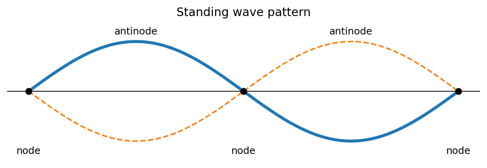
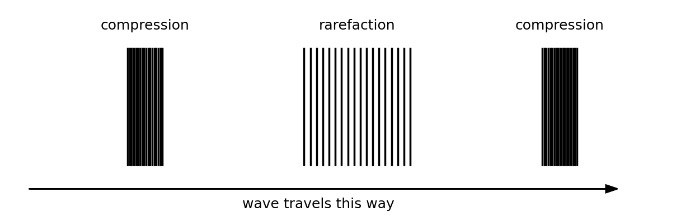
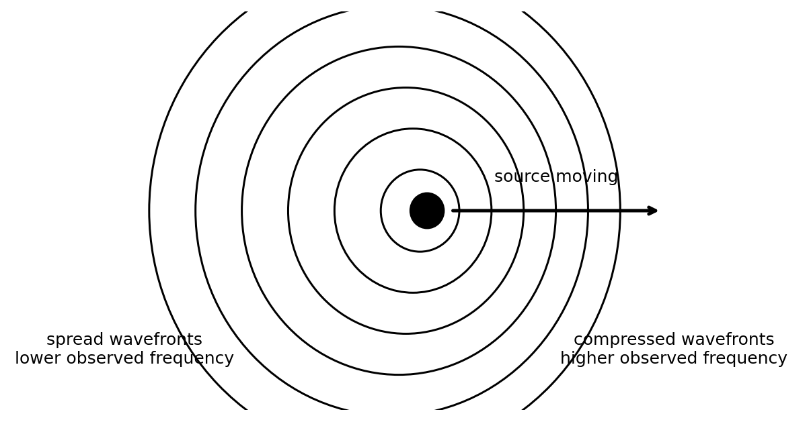
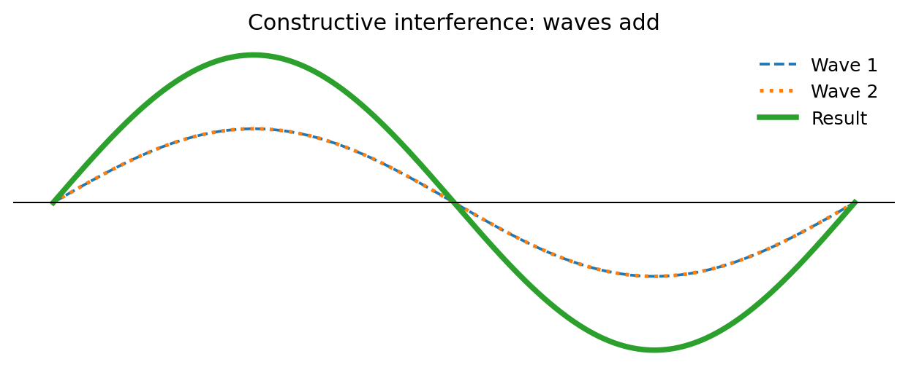
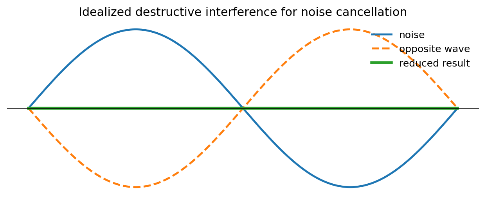
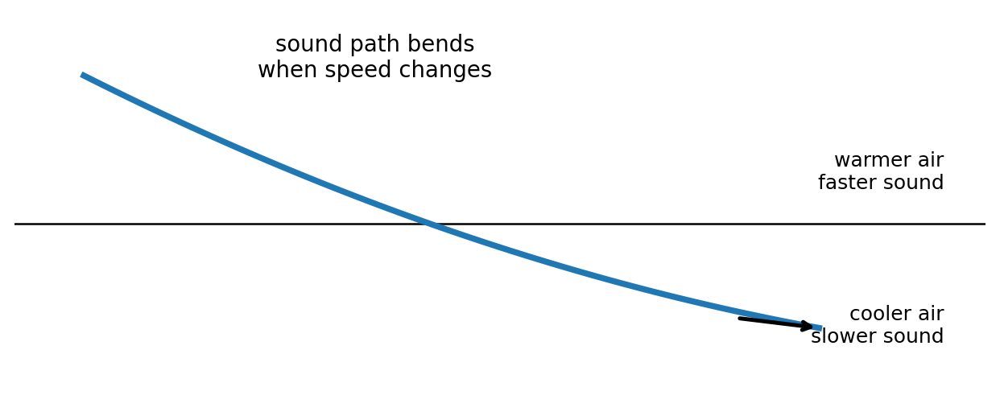
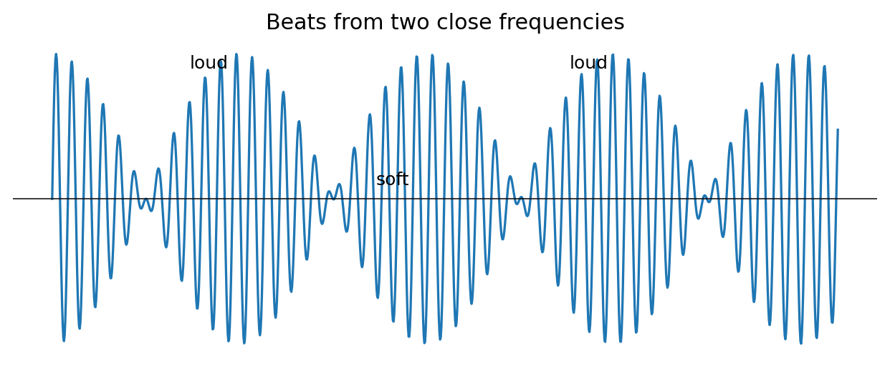
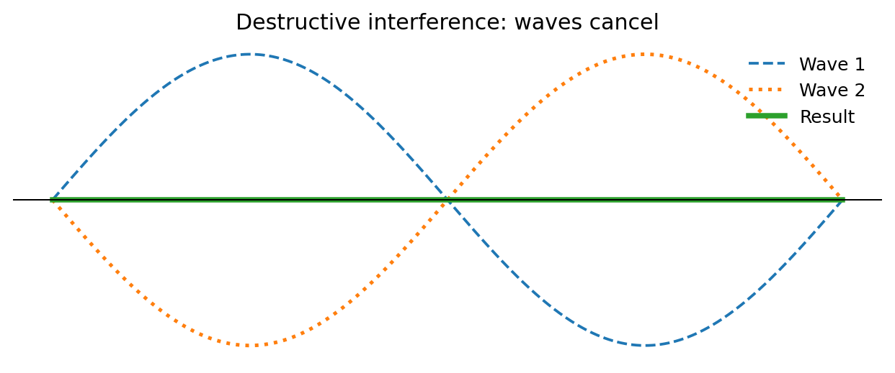

Conceptual Physics — Unit 5 Assessment Plan
Unit 5: Waves and Sound
Essential Standard
Students will analyze vibrations, waves, and sound by describing wave properties, comparing transverse and longitudinal waves, explaining wave speed, modeling reflection, refraction, interference, resonance, and beats, and using evidence from real-world sound phenomena to explain how waves transfer energy through a medium.
Section 5.1: Vibrations and Wave Properties
Textbook Sections: 19.1–19.4
Learning Target: Students will describe vibrations and waves using amplitude, wavelength, frequency, period, and wave speed.
- I can explain that a vibration is a repeated back-and-forth motion.
- I can describe a wave as a disturbance that transfers energy.
- I can identify amplitude, wavelength, frequency, period, crest, trough, compression, and rarefaction.
- I can distinguish transverse waves from longitudinal waves.
- I can use wave speed relationships to connect frequency, wavelength, and speed.
Section 5.2: Wave Interactions
Textbook Sections: 19.5, 19.6
Learning Target: Students will explain how waves interact through interference, standing waves, and the Doppler effect.
- I can explain constructive and destructive interference.
- I can interpret simple wave-superposition diagrams.
- I can describe how standing waves form.
- I can explain the Doppler effect as a change in observed frequency caused by relative motion.
- I can connect wave interactions to everyday examples such as sirens, stadium waves, slinkies, and strings.
Section 5.3: Nature of Sound
Textbook Sections: 20.1, 20.2
Learning Target: Students will explain sound as a longitudinal mechanical wave that requires a medium and transfers energy through vibrating particles.
- I can explain that sound begins with a vibrating source.
- I can describe sound as compressions and rarefactions traveling through a medium.
- I can explain why sound cannot travel through a vacuum.
- I can compare how sound travels through solids, liquids, and gases.
- I can connect pitch, loudness, frequency, amplitude, and energy.
Section 5.4: Reflection, Refraction, and Resonance
Textbook Sections: 20.3–20.6
Learning Target: Students will explain how sound reflects, refracts, and causes resonance in real-world situations.
- I can explain echoes as reflected sound waves.
- I can explain why sound can bend when wave speed changes in different conditions.
- I can describe forced vibration.
- I can define natural frequency.
- I can explain resonance as a large response when a driving frequency matches a natural frequency.
Section 5.5: Sound Interference and Beats
Textbook Sections: 20.7, 20.8
Learning Target: Students will analyze sound interference and beats using wave superposition and frequency differences.
- I can explain how two sound waves can combine constructively or destructively.
- I can describe how noise-canceling headphones use destructive interference.
- I can explain beats as alternating loud and soft sound caused by close frequencies.
- I can use beat frequency to compare two sound sources.
- I can critique explanations of sound interference using wave vocabulary.
Unit 5 Formula / Symbol Limit
This unit remains conceptual before computational. The following formulas and symbolic relationships are enough for the entire unit.
- Wave speed: $v=f\lambda$
- Frequency from period: $f=\frac{1}{T}$
- Period from frequency: $T=\frac{1}{f}$
- Speed from distance and time: $v=\frac{d}{t}$
- Wavelength from wave speed and frequency: $\lambda=\frac{v}{f}$
- Beat frequency: $f_{beat}=|f_1-f_2|$
- Echo distance relationship: $d=\frac{vt}{2}$
- Approximate speed of sound in air: $v_{sound}\approx 340\text{ m/s}$
No more than these eight formulas/symbolic relationships should be required for Unit 5 assessments.
Learning Ladder
| Rung | I Can Statement | Science Practice | DOK | Level |
|---|---|---|---|---|
| 8 | I can design, defend, or critique a complete wave or sound model for an unfamiliar situation using diagrams, data, equations, and evidence. | Construct Explanations / Argue from Evidence | DOK 4 | Above |
| 7 | I can compare competing explanations of wave behavior, sound transmission, resonance, interference, or beats and justify which explanation better fits the evidence. | Analyze and Evaluate Models | DOK 4 | Above |
| 6 | I can connect wave diagrams, sound models, data tables, graphs, formulas, and written scenarios to explain wave or sound behavior. | Use Models / Explain Phenomena | DOK 3 | Essential |
| 5 | I can identify and correct misconceptions about wave speed, frequency, wavelength, sound transmission, Doppler effect, resonance, interference, or beats. | Critique Reasoning | DOK 3 | Essential |
| 4 | I can calculate wave speed, frequency, period, wavelength, echo distance, or beat frequency in simple situations and interpret the answer in context. | Use Mathematical Thinking | DOK 2 | Essential |
| 3 | I can interpret transverse-wave diagrams, longitudinal-wave diagrams, interference diagrams, standing-wave diagrams, and sound-wave models. | Develop and Use Models | DOK 2 | Essential |
| 2 | I can define and recognize key terms such as vibration, wave, amplitude, wavelength, frequency, period, medium, compression, rarefaction, resonance, and interference. | Identify Patterns / Use Vocabulary | DOK 1 | Essential |
| 1 | I can recognize whether a situation involves vibration, wave motion, sound transmission, reflection, refraction, interference, resonance, or beats. | Observe and Classify | DOK 1 | Essential |
Format: 3–5 minute warm-up, quick check, image prompt, vocabulary check, mini-whiteboard response, card sort, diagram labeling, or exit ticket
Purpose: Check whether students can recognize basic wave and sound vocabulary, identify wave features, classify wave types, and distinguish vibration, wave motion, sound, interference, resonance, and beats.
Assessment Ideas
- Wave Feature Diagram Labeling Can Be Assessed After Unit 5, Section 5.1 — Students label amplitude, wavelength, crest, trough, equilibrium position, compression, and rarefaction on wave diagrams.
- Transverse or Longitudinal? Can Be Assessed After Unit 5, Section 5.1 — Students classify wave examples and sketches as transverse, longitudinal, both, or not enough information.
- Sound Needs a Medium Can Be Assessed After Unit 5, Section 5.3 — Students identify whether sound can travel through solids, liquids, gases, or a vacuum and explain one choice.
- Wave Phenomenon Snapshot Sort Can Be Assessed After Unit 5, Section 5.5 — Students sort real-world examples into reflection, refraction, resonance, interference, Doppler effect, or beats.
What this tells the teacher:
Students who struggle here need more support with vocabulary, visual wave features, and the difference between a wave’s motion and the motion of particles in the medium.
Format: Exit ticket, diagram interpretation, short calculation, ranking task, wave model, partner check, data table, graph interpretation, or whiteboard response
Purpose: Check whether students can apply wave formulas, interpret wave diagrams, compare wave properties, and connect numerical results to physical meaning.
Assessment Ideas
- Wave Speed from Diagram and Data Can Be Assessed After Unit 5, Section 5.1 — Students use frequency and wavelength from a diagram or data table to calculate wave speed and explain what the result means.
- Frequency, Period, and Wavelength Match-Up Can Be Assessed After Unit 5, Section 5.1 — Students match waves with different frequencies, periods, and wavelengths to descriptions such as higher pitch, longer wavelength, or more cycles per second.
- Interference Diagram Task Can Be Assessed After Unit 5, Section 5.2 — Students interpret overlapping wave diagrams and identify constructive interference, destructive interference, or partial interference.
- Echo and Sound Speed Task Can Be Assessed After Unit 5, Section 5.4 — Students use echo time and the speed of sound to determine distance, remembering that the sound travels to the object and back.
What this tells the teacher:
Students at this level can usually use formulas and diagrams in familiar situations. Errors reveal whether students are confusing frequency with speed, amplitude with wavelength, pitch with loudness, or one-way distance with echo round-trip distance.
Format: Constructed response, misconception analysis, CER, diagram critique, graph explanation, ranking explanation, gallery walk, or group whiteboard defense
Purpose: Check whether students can reason strategically, explain cause and effect, connect multiple representations, and correct common misconceptions about waves and sound.
Assessment Ideas
- Pitch vs. Loudness Misconception Response Can Be Assessed After Unit 5, Section 5.3 — Students respond to the claim, “A louder sound must have a higher pitch,” and revise it using amplitude and frequency.
- Doppler Effect Explanation Task Can Be Assessed After Unit 5, Section 5.2 — Students explain why a siren sounds higher-pitched as it approaches and lower-pitched as it moves away.
- Sound in Space Critique Can Be Assessed After Unit 5, Section 5.3 — Students critique a movie scene where a loud explosion is heard in outer space and revise the explanation using medium and mechanical-wave language.
- Resonance Model Explanation Can Be Assessed After Unit 5, Section 5.4 — Students explain why a tuning fork, swing, glass, or guitar body vibrates strongly when driven at its natural frequency.
What this tells the teacher:
This level shows whether students understand the physics behind formulas and vocabulary. These tasks are useful for deciding who needs reteaching on wave speed, pitch/loudness, sound transmission, Doppler effect, interference, or resonance.
Format: Performance task, extended response, investigation reflection, modeling task, critique task, engineering analysis, or strategy defense
Purpose: Check whether students can synthesize wave diagrams, sound models, frequency data, formulas, system descriptions, and real-world evidence in unfamiliar wave and sound situations.
Assessment Ideas
- Build a Wave Model from Evidence Can Be Assessed After Unit 5, Section 5.1 or 5.2 — Students receive a wave diagram, data table, or graph and create a complete model describing amplitude, wavelength, frequency, period, speed, and energy.
- Design a Soundproofing or Noise-Control Solution Can Be Assessed After Unit 5, Section 5.3 or 5.5 — Students design a strategy to reduce unwanted sound using absorption, reflection, interference, distance, or material choice.
- Resonance Investigation Defense Can Be Assessed After Unit 5, Section 5.4 — Students design or analyze an investigation using tuning forks, strings, tubes, pendulums, or speakers to show forced vibration and resonance.
- Beat Frequency and Tuning Critique Can Be Assessed After Unit 5, Section 5.5 — Students analyze two nearly matching frequencies, explain the beat pattern, and critique a student’s explanation of how musicians tune instruments.
What this tells the teacher:
DOK 4 tasks show whether students can transfer wave and sound understanding to unfamiliar systems and defend reasoning using wave models, formulas, diagrams, and evidence.
Assessment is designed for a 45-minute time limit.
The Unit 5 summative will be created as one consolidated HTML file with six versions of the assessment, an answer key, and a standardized two-page answer sheet. Test questions will be printed without workspaces so students use the answer sheet for responses and formula work.
Assessment File Structure
Single summative file: ../summative/unit5_summative_assessment/unit5_summative_assessment.html
The summative file will include six versions of the assessment. Each version should assess the same Unit 5 standards, DOK levels, vocabulary expectations, misconception checks, diagram skills, wave-modeling skills, sound-modeling skills, and formula skills, but with varied numbers, contexts, diagrams, wording, and answer order.
Recommended Student Assessment Structure
Questions 1–16: Multiple Choice — Students answer on the standardized bubble sheet.
- 5 Questions DOK 1 — Vocabulary, basic recognition, transverse versus longitudinal waves, wave features, medium requirements, and sound/wave phenomenon classification.
- 6 Questions DOK 2 — Interpreting wave diagrams, applying wave speed relationships, identifying frequency/period/wavelength relationships, interpreting interference diagrams, calculating beat frequency, and using echo distance reasoning.
- 4 Questions DOK 3 — Analyzing misconceptions, connecting pitch and loudness to wave properties, interpreting Doppler effect, explaining sound transmission, and choosing the best resonance or interference explanation.
- 1 Question DOK 4 — Evaluating a model, critique, investigation-based reasoning, engineering-design reasoning, or choosing the best evidence-supported explanation.
Questions 17–20: Free Response / Formula and Reasoning Questions — These are the last four questions of each assessment version. Students complete these on the back side of the standardized answer sheet in four numbered quadrants.
- Question 17: Formula / wave-speed reasoning using $v=f\lambda$, $f=\frac{1}{T}$, $T=\frac{1}{f}$, or $\lambda=\frac{v}{f}$.
- Question 18: Formula / sound-speed, echo, or beat-frequency reasoning using $v=\frac{d}{t}$, $d=\frac{vt}{2}$, or $f_{beat}=|f_1-f_2|$.
- Question 19: Wave diagram, sound model, interference model, standing-wave model, or resonance explanation.
- Question 20: Context-rich application, sound-design critique, Doppler/resonance/interference explanation, or short CER-style reasoning task.
Answer Key and Answer Sheet Pages
After the six assessment versions, the summative file will include an answer key.
The final two pages of the file will be a standardized answer sheet:
- Answer Sheet Page 1: Assessment Name, Student Name, bubble area for selecting version number, and bubbles for multiple-choice questions 1–16.
- Answer Sheet Page 2: Prints on the back of Page 1 and is divided into four quadrants labeled 17, 18, 19, and 20 for the free-response formula and reasoning questions.
Question-Type Balance
- Standard wording: about 5 questions
- Inverted wording: about 5 questions
- Context-rich wording: about 6 questions
- Vocabulary / diagram / model-based wording: about 4 questions
Assessment Bank Note
The assessment bank should remain open-response, short-answer, diagram-based, graph-based, wave-model-based, sound-model-based, and explanation-based. Bank items should not be written as multiple-choice questions. Selected bank items can later be adapted into multiple-choice summative questions with misconception-based distractors for questions 1–16.
Scoring Recommendation
Suggested weighting: Multiple Choice: 16 points; Free Response: 16 points total, 4 points per quadrant; Total: 32 points.
- 4: Accurate answer, clear reasoning, correct vocabulary, correct formula use or model, and complete explanation.
- 3: Mostly correct with minor error or missing detail.
- 2: Partial understanding shown, but reasoning, diagram, graph, or calculation is incomplete.
- 1: Minimal correct physics shown.
- 0: Blank, unrelated, or no meaningful evidence of understanding.
A — Highly Proficient
The student demonstrates a strong and flexible understanding of Unit 5 concepts. Work is accurate, well-organized, and supported by clear reasoning. The student can explain vibrations, wave properties, wave speed, interference, Doppler effect, sound transmission, reflection, refraction, resonance, and beats in familiar and unfamiliar situations. The student can interpret wave diagrams, sound models, frequency data, resonance examples, and real-world sound claims, use formulas appropriately, critique models, and defend claims using evidence.
B — Proficient
The student demonstrates solid understanding of the essential Unit 5 concepts. Most work is accurate, and the student can complete standard and moderately complex tasks independently. The student can identify wave features, distinguish transverse and longitudinal waves, calculate wave speed or beat frequency, explain sound as a mechanical wave, interpret simple interference or resonance diagrams, and connect pitch and loudness to frequency and amplitude. Explanations are generally clear, though they may lack some precision or depth.
C — Developing Proficiency
The student demonstrates partial but passable understanding of Unit 5 concepts. The student can complete many routine tasks but may need support with wave diagrams, frequency-period relationships, interference, Doppler effect, sound transmission, resonance, beat frequency, or explaining the difference between pitch and loudness. Work may contain errors or incomplete explanations, but there is enough evidence that the student understands the main ideas.
Not Yet — Insufficient Evidence
The student does not yet demonstrate sufficient understanding of the essential Unit 5 concepts. Work shows major errors, missing reasoning, confusion between frequency and amplitude, confusion between wave speed and particle motion, weak diagram interpretation, incorrect formula use, or weak connections between wave models and evidence. The student may need reteaching, additional practice, or reassessment to demonstrate proficiency.
Strictly Assessment Bank
This bank is organized by DOK so future formative versions and summative versions can be assembled quickly. The bank should remain open-response, short-answer, diagram-based, graph-based, wave-model-based, sound-model-based, and explanation-based. Bank questions should not be multiple choice.
Figure naming convention for future assessment files: use unit5-dok#-#-problem#.png or descriptive names in the figures/ folder.
Match each term to its definition.
Terms: 1. Amplitude 2. Wavelength 3. Frequency 4. Period 5. Medium
Definitions:
- The time for one complete cycle
- The material through which a mechanical wave travels
- The distance between matching points on a wave
- The number of cycles per second
- The maximum displacement from equilibrium
Which term best matches this definition?
“A repeated back-and-forth motion.”
State whether each example is best described as a transverse wave, longitudinal wave, or neither.
- A wave on a rope moving up and down as the wave travels forward
- Sound traveling through air
- A crowd doing “the wave” in a stadium
- A book sliding across a table
Complete the sentence using the best vocabulary term: A region where particles are crowded together in a longitudinal wave is called a __________.
In your own words, explain why sound cannot travel through empty space.
Identify whether each situation involves reflection, refraction, interference, resonance, Doppler effect, or beats.
- You hear an echo in a canyon.
- A siren changes pitch as an ambulance passes.
- A swing moves higher when pushed at the right time.
- Two close notes make a pulsing sound.
State whether each description is more directly related to pitch or loudness.
- A higher frequency sound
- A greater amplitude sound
- A quieter sound
- A lower frequency sound
A student sees a wave diagram with tall crests. Which wave property is larger: amplitude or wavelength? Explain in one sentence.

Classify each as a wave source, medium, or wave behavior.
- A vibrating guitar string
- Air carrying sound
- A sound wave reflecting from a wall
- Water carrying ripples
Identify whether each statement describes frequency, period, or wavelength.
- The wave completes 8 cycles each second.
- One cycle takes 0.25 seconds.
- The distance from crest to crest is 2 meters.
- A tuning fork vibrates 256 times each second.
In your own words, explain what a standing wave is.

Which vocabulary term describes the natural back-and-forth motion an object tends to make when disturbed?
A wave has a frequency of 5 Hz and a wavelength of 2 m. Determine the wave speed.
Determine the wavelength of a sound wave traveling at $340\text{ m/s}$ with a frequency of 170 Hz.
A wave completes one cycle every 0.25 seconds. Determine its frequency.
A sound wave has a frequency of 500 Hz. Determine its period.
A student claps near a wall and hears the echo 0.60 seconds later. Use $v_{sound}\approx 340\text{ m/s}$ to determine the distance to the wall.

Two tuning forks have frequencies of 256 Hz and 260 Hz. Determine the beat frequency.
A diagram shows a transverse wave with a wavelength of 4 m and an amplitude of 0.5 m. The wave passes a point 3 times each second. Determine the wave speed.
A longitudinal wave diagram shows compressions spaced 0.80 m apart. The source vibrates 10 times each second. Determine the wave speed.

A sound travels 1020 meters in 3 seconds. Determine the speed of the sound.
Two waves meet. At one point, one wave has a displacement of $+3\text{ cm}$ and the other has a displacement of $-2\text{ cm}$. Determine the resulting displacement.
A wave on a rope has the same speed but its frequency is doubled. Describe what happens to its wavelength.
A student draws a sound wave with compressions closer together for a higher-pitched sound. Explain whether the diagram makes sense.
A student says, “A louder sound must have a higher pitch.” Explain the misconception and revise the statement using amplitude and frequency.
A student says, “Sound travels because air particles move all the way from the speaker to your ear.” Critique the statement and revise it using vibration and energy transfer.

A wave on a string moves to the right, but the string particles move up and down. Explain how this shows the difference between wave motion and particle motion.
A student says, “If frequency increases, wave speed must increase too.” Explain when this is incorrect and how wavelength may change instead.
An ambulance siren sounds higher-pitched as it approaches and lower-pitched after it passes. Explain this using the Doppler effect.

Two speakers play the same tone. At some places the sound is louder, and at other places it is quieter. Explain how interference causes this pattern.

A student says, “Noise-canceling headphones destroy sound energy.” Critique the claim and revise it using destructive interference and energy transfer.

A guitar body vibrates when a string is plucked. Explain how forced vibration and resonance help make the sound louder.
A singer can break a glass only under special conditions. Explain why matching the glass’s natural frequency matters.
A student hears a delayed echo and says, “The sound slowed down on the way back.” Explain a better reason for the delay.
A sound wave travels from warm air into cooler air where sound speed is different. Explain how this can cause refraction of sound.

Two notes with frequencies of 440 Hz and 444 Hz are played together. Explain why the listener hears a pulsing sound.

A student creates a wave diagram for a rope and claims it shows a high-frequency, low-amplitude wave.
- Identify what features of the diagram should support the claim.
- Explain how frequency would be represented if the wave speed is known.
- Explain how amplitude would be represented.
- Describe evidence that would prove the claim wrong.
Design a short investigation that shows the relationship between frequency, wavelength, and wave speed.
Your response should include:
- Materials
- Procedure
- What students should measure or observe
- What pattern would support $v=f\lambda$
- One likely misconception and how the investigation addresses it
A student claims, “Sound cannot travel through solids because solids do not flow like air.”
- Critique the claim.
- Explain how particles in a solid can vibrate.
- Compare sound transmission in solids and gases.
- Write a corrected explanation.
A school wants to reduce echo in a gymnasium.
- Identify the wave behavior causing the problem.
- Propose at least two design changes.
- Explain how each change affects sound reflection, absorption, or scattering.
- Defend which change would likely help most.
A student draws two identical waves overlapping and labels the result “complete destructive interference.”
- Critique the model.
- Explain what must be true for complete destructive interference.
- Revise the model in words or with a sketch description.
- Explain what happens when the waves pass through each other.

Design a short investigation that demonstrates resonance.
Your response should include:
- Materials
- Procedure
- What students should change
- What students should observe
- How the observations show resonance
- One likely misconception and how the investigation addresses it

A musician tunes a guitar using beats. Two strings are played together, and the beats become slower as the musician adjusts one string.
- Explain what the beat pattern tells the musician.
- Explain what happens to the frequency difference as beats slow down.
- Explain how the musician knows the strings are closer to being in tune.
- Use beat-frequency reasoning in your explanation.
A student says, “The Doppler effect happens because the siren itself changes frequency when the ambulance moves.”
Evaluate the statement, identify the misconception, and write a corrected explanation using source motion, wavefront spacing, and observed frequency.
A group designs noise-canceling headphones and claims they work by making an opposite sound wave.
- Explain what “opposite sound wave” should mean.
- Explain how destructive interference reduces the detected sound.
- Identify one limitation of the design.
- Explain why timing and frequency matching matter.
A student compares two wave diagrams and says, “Wave A has more energy because it has a longer wavelength.”
Critique the claim and propose a better evidence-based comparison using amplitude, frequency, medium, and wave type.
A theater designer wants sound to be clear in every seat.
Explain how reflection, absorption, interference, and distance could affect what the audience hears. Propose a design strategy and defend it using wave behavior.
A website claims that a device can make a room completely silent by playing one constant tone.
- Identify the physics claim being made.
- Explain why real room noise is more complicated than one tone.
- Use interference and frequency ideas to critique the claim.
- Describe what evidence would be needed to test the claim.